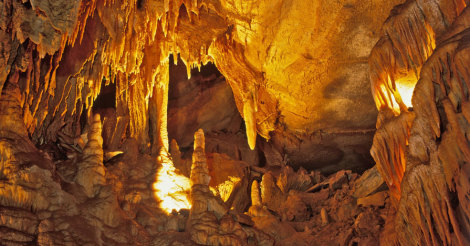

Мамонтова пещера

Пещера образовалась в результате карстования в толстом пласте известняка под пластом песчаника Биг-Клифти.
Пласт водонепроницаемого песчаника действует как крышка и защищает пещеру от просачивающейся воды.
Благодаря этому верхние проходы пещеры очень сухие и, следовательно, там нет сталактитов, сталагмитов и прочих натёчных образований.
Однако в ряде мест, например в зале «Замёрзшая Ниагара», эрозия и трещины в песчанике позволяют воде попасть в пещеру.
В одном из нижних проходов протекает крупная подземная река Эхо (англ. Echo River) шириной до 60 метров и глубиной до 10 метров.
Микроклимат в пещере постоянный:температура воздуха составляет около 10°C.